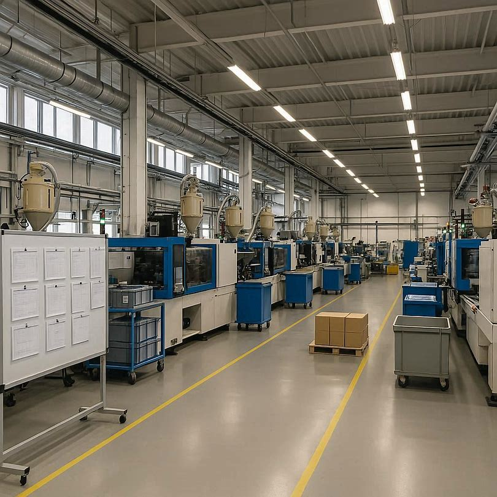
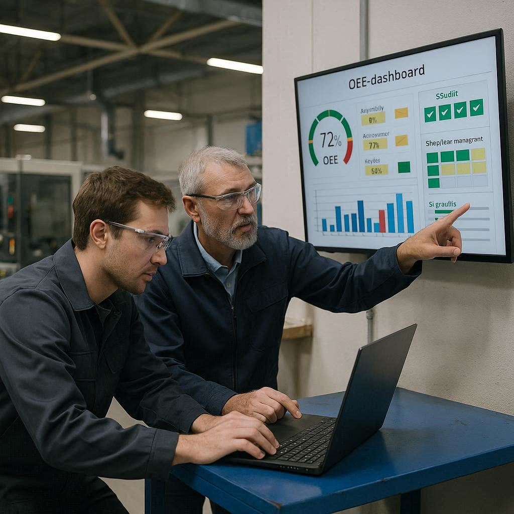
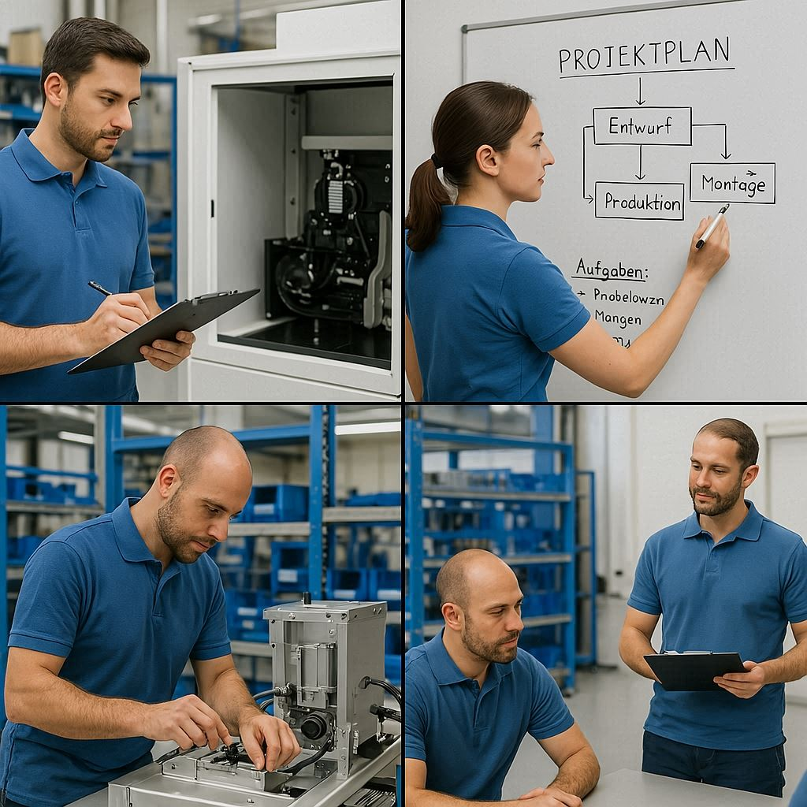
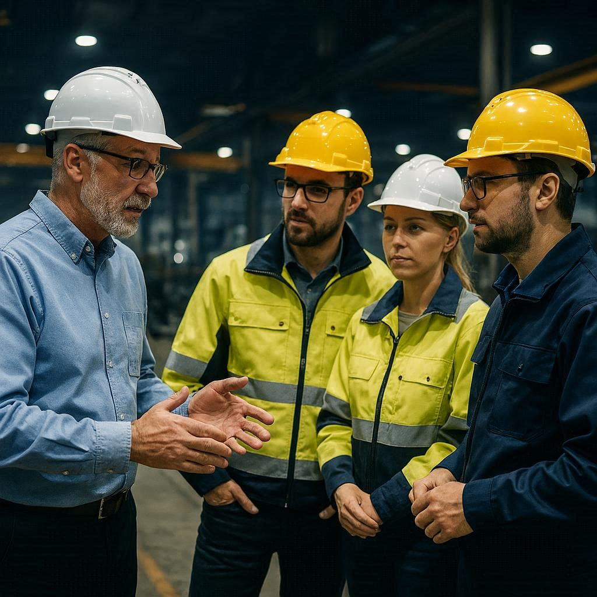

Produktion stabilisieren. Margen sichern. Sofort.
Interim Operations Manager | Lean · SMED · OEE | DACH & Italy | sofort verfügbar
Kontakt aufnehmenInterim-Manager für kleine und mittlere Unternehmen in schwierigen Phasen – mit über 20 Jahren Erfahrung in der verarbeitenden Industrie in Deutschland und Italien, davon mehrere Jahre in Führungs- und Geschäftsführungsfunktionen.
Ich unterstütze Unternehmen, wenn Produktionslinien nicht stabil laufen, Margen schrumpfen oder Verantwortlichkeiten unklar sind. Mein Fokus: Stabilisierung von Produktion und Prozessen, OEE-Steigerung durch Shopfloor Management und SMED, sowie Aufbau klarer Führungsstrukturen. Kein PowerPoint-Lean – sondern messbare Ergebnisse direkt in der Produktion.
Kosten steigen, Preisdruck wächst
Schwankende Qualität und Verfügbarkeit
Ungenutztes Produktionspotenzial
Versteckte Verschwendung im Prozess
2 Stunden vor Ort – ohne Vorbereitung – 2-3 priorisierte Ansatzpunkte mit kurzfristigem Verbesserungspotenzial. Ideal als erster Schritt vor einem längeren Mandat.
Jetzt anfragenKeine theoretischen Konzepte, sondern hands-on Implementierung bewährter Methoden zur Stabilisierung und Effizienzsteigerung:
Stabilisierung ist der erste Schritt – langfristig kann daraus ein nachhaltiger Turnaround oder Wachstum entstehen.

Reduzierung von Verschwendung, Stabilisierung der Produktion und Steigerung der Margen durch systematische Analyse und praxisnahe Optimierung.

Einführung von OEE-Dashboards, 5S und Shopfloor-Management zur Echtzeitkontrolle und nachhaltigen Verbesserung.

Optimierung von Produktionsabläufen und Mehrschichtbetrieb, um maximale Effizienz zu erreichen und versteckte Verschwendung zu eliminieren.

Führungskräfte und Teams befähigen, Verbesserungen eigenständig zu identifizieren, umzusetzen und nachhaltig zu sichern – wichtige Grundlage für Übergabe- oder Wachstumsprojekte.
„Wir hatten das Vergnügen, mit Tomas Frongia zusammenzuarbeiten. Dank seiner Expertise konnten wir die Werkzeugwechselzeiten um 40 % reduzieren, wodurch wertvolle Ressourcen freigesetzt und die Gesamteffizienz deutlich gesteigert wurden."
„Herr Frongia implementierte SMED- und TPM-Systeme, verbesserte die OEE, stabilisierte die Produktivität auf einem Niveau von über 95 % und steigerte sie im gleichen Zeitraum um mehr als 10 %."
Interim Manager for small and medium-sized companies in difficult phases – with over 20 years of experience in manufacturing across Germany and Italy, including several years in senior management and executive roles.
I step in when production lines are unstable, margins are shrinking, or accountability is unclear. My focus: stabilizing production and processes, improving OEE through Shopfloor Management and SMED, and building clear leadership structures. No PowerPoint lean – measurable results, directly on the shop floor.
Rising costs, increasing price pressure
Fluctuating quality and availability
Untapped production potential
Hidden waste in processes
2 hours on-site – no preparation needed – 2-3 prioritized action points with short-term improvement potential. Ideal as a first step before a longer engagement.
Get in touchNo theoretical concepts, but hands-on implementation of proven methods for stabilization and efficiency improvement:
Stabilization is the first step – over time, this can lead to sustainable turnaround or growth.
Reduce waste, stabilize operations, and increase margins through systematic analysis and hands-on optimization.
Implement OEE dashboards, 5S and shopfloor management for real-time control and sustainable improvement.
Optimize production flows and multi-shift operations to maximize efficiency and eliminate hidden waste.
Equip leaders and teams to independently identify, implement, and sustain improvements – a key foundation for succession or growth projects.
„We had the pleasure of collaborating with Tomas Frongia. Thanks to his expertise, we were able to reduce mold changeover times by 40%, freeing up valuable resources and significantly improving overall efficiency."
„Mr. Frongia implemented SMED and TPM systems, improving the OEE, enhancing productivity in to a stable level above 95% and increasing it by more than 10% in the same amount of time."
Bereit, Ihr Unternehmen voranzubringen? / Ready to grow your business together?
E-Mail senden / Send Email